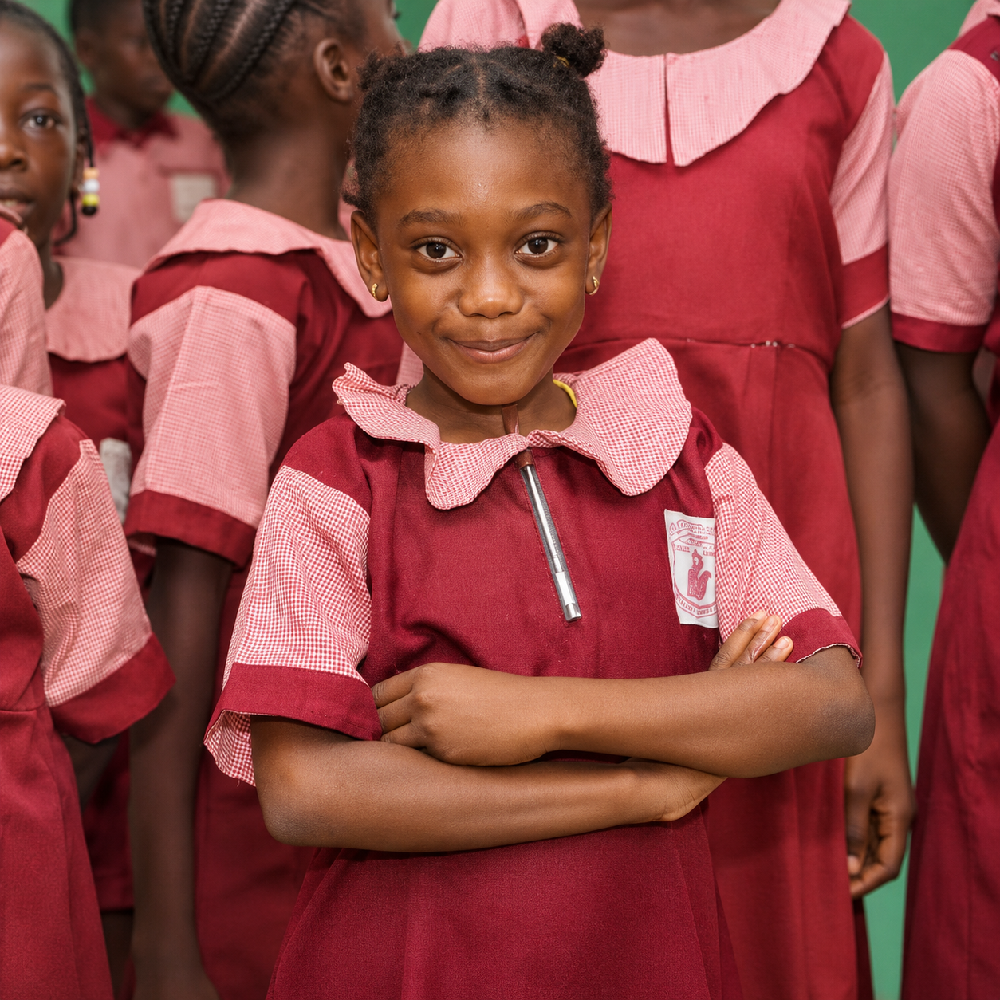
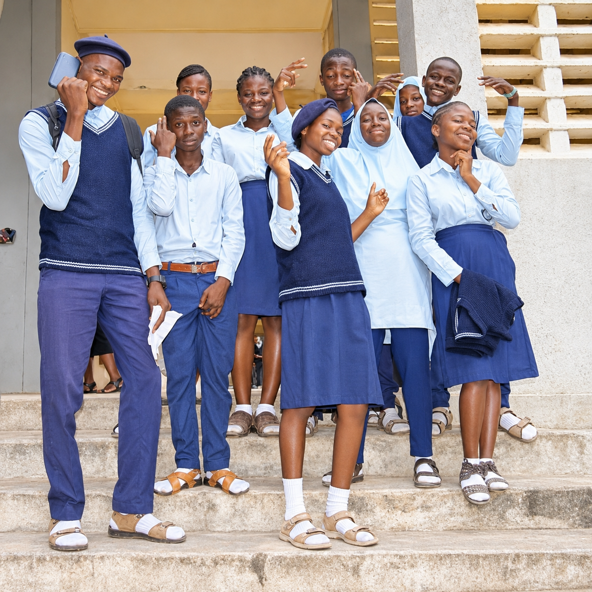
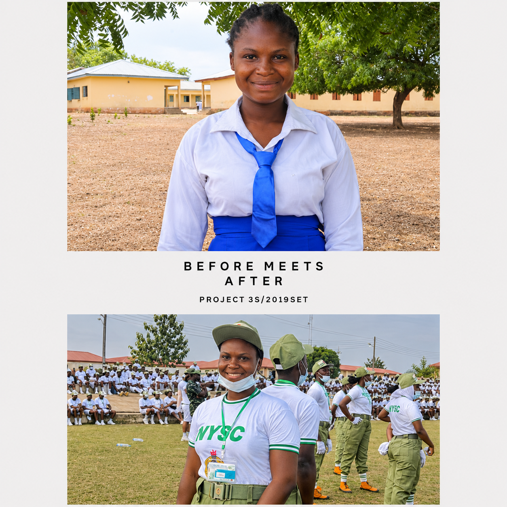

<section class="commitment-showcase" id="our-commitment">
  <div class="commitment-wrap">

    <div class="commitment-head">
      <div class="commitment-head-left">
        <span class="commitment-kicker">Our Commitment</span>
        <h2>Creating access, leadership and sustainable educational opportunities.</h2>
      </div>

      <a href="donate.html" class="commitment-top-btn">
        Get Involved
        <span>&rarr;</span>
      </a>
    </div>

    <div class="commitment-grid-new">

      <!-- CARD 1 -->
      <article class="commitment-card-new">
        <div class="commitment-card-inner">

          <div class="commitment-media">
            
            <div class="commitment-overlay"></div>
          </div>

          <div class="commitment-content">
            <div class="commitment-number-row">
              <span class="commitment-number-new">01</span>
              <span class="commitment-label">ACCESS</span>
            </div>

            <h3>Ensuring Access to Basic Education</h3>

            <p>
              OpenFees works to make primary and secondary education accessible
              to children from low-income households and underserved communities,
              helping them overcome school-related financial barriers.
            </p>

            <a href="our-work.html" class="commitment-link">
              Learn more
              <span>&rarr;</span>
            </a>
          </div>

        </div>
      </article>

      <!-- CARD 2 -->
      <article class="commitment-card-new commitment-card-featured">
        <div class="commitment-card-inner">

          <div class="commitment-content commitment-content-featured">
            <div class="commitment-number-row">
              <span class="commitment-number-new">02</span>
              <span class="commitment-label">LEADERSHIP</span>
            </div>

            <h3>Empowering the Next Generation of Leaders</h3>

            <p>
              Through its OpenHub Programme, the foundation provides mentorship,
              emotional intelligence development, and empathy-focused learning
              to help young people become responsible and prepared for the future.
            </p>

            <a href="about.html" class="commitment-link dark-link">
              Learn more
              <span>&rarr;</span>
            </a>
          </div>

          <div class="commitment-media commitment-media-bottom">
            
            <div class="commitment-overlay"></div>
          </div>

        </div>
      </article>

      <!-- CARD 3 -->
      <article class="commitment-card-new">
        <div class="commitment-card-inner">

          <div class="commitment-media">
            
            <div class="commitment-overlay"></div>
          </div>

          <div class="commitment-content">
            <div class="commitment-number-row">
              <span class="commitment-number-new">03</span>
              <span class="commitment-label">INNOVATION</span>
            </div>

            <h3>Innovation for Sustainable Financing</h3>

            <p>
              OpenFees explores technology, partnerships, community collaboration,
              alternative funding approaches, and retail initiatives to support
              sustainable access to education.
            </p>

            <a href="contact.html" class="commitment-link">
              Learn more
              <span>&rarr;</span>
            </a>
          </div>

        </div>
      </article>

    </div>
  </div>
</section>
